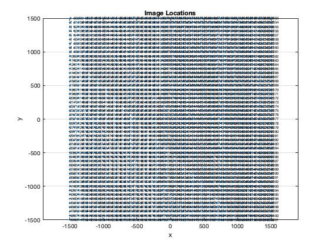
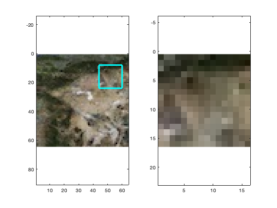

Contents
Create terrain snippets to train and test the deep learning algorithm
This will break bigger images into smaller images. Loads TerrainClose64.jpg. Will create a TerrainImages folder if it does not exist. Existing images are deleted and new ones created. Also creates two mat-files, one for the image labels and one for the corresponding locations.
Files created:
- TerrainImage().jpg - Label.mat - loc.mat
See also randperm, waitbar, imwrite, save, image
im = flipud(imread('TerrainClose64.jpg')); % Read in the image wIm = 4000; % m nBits = 16; dN = 1; % The delta bits is 1 nBM1 = nBits-1; [n,m] = size(im); % Size of the image nI = (n-nBits)/dN + 1; % The number of images down one side nN = 10; % How many copies of each image we want sig = 3; % Set to > 0 to add noise to the images dW = wIm/64; % Delta position for each image (m) x0 = -wIm/2+(nBits/2)*dW; % Starting location in the upper left corner y0 = wIm/2-(nBits/2)*dW; % Starting location in the upper left corner % Make an image serial number so they remain in order in the imageDatastore kAdd = 10^ceil(log10(nI*nI*nN)); % Set up the directory if ~exist('TerrainImages','dir') warning('Are you in the right folder? No TerrainImages') [success,msg] = mkdir('./','TerrainImages') end cd TerrainImages delete *.jpg % Starting from scratch so delete existing images kCheck = randperm(nI-1,2); i = 1; l = 1; t = zeros(1,nI*nI*nN); % The label for each image x = x0; % Initial location y = y0; % Initial location r = zeros(2,nI*nI); % The x and y coordinates of each image id = zeros(1,nI*nI); iMI = zeros(1,nI*nI); rgbs = []; hW = waitbar(0,'Processing Terrain Images'); for k = 1:nI waitbar(k/nI,hW); kR = dN*(k-1)+1:dN*(k-1) + nBits; for j = 1:nI kJ = dN*(j-1)+1:dN*(j-1) + nBits; thisImg = im(kR,kJ,:); rgbs(end+1,:) = [mean(mean(thisImg(:,:,1))) mean(mean(thisImg(:,:,2))) mean(mean(thisImg(:,:,3)))]; for p = 1:nN s = im(kR,kJ,:) + uint8(floor(sig*rand(nBits,nBits,3))); q = s > 256; s(q) = 256; q = s < 0; s(q) = 0; imwrite(s,sprintf('TerrainImage%d.jpg',i+kAdd)); t(i) = l; i = i + 1; end % number of images at each location if (k==kCheck(1) && j==kCheck(2)) imgCheck = thisImg; rCheck = [x;y]; end r(:,l) = [x;y]; id(l) = l; if( l == 1913 ) l k j kR kJ r(:,l) end iMI(l) = i + kAdd - 1; l = l + 1; y = y - dW; end x = x + dW; y = y0; end close(hW) % Save the labels save('Label','t'); cd .. save('loc','r','id','id','im','iMI'); % Just confirm the image locations look right figure('name','Image Locations') plot(r(1,:),r(2,:),'.') for j = 1:nI*nI text(r(1,j),r(2,j),sprintf('%d',id(j)),'fontsize',6); end xlabel('x'); ylabel('y'); title('Image Locations') axis equal; grid on; % check the test image location figure('Name','TestImage') subplot(1,2,1) image(im); axis equal; hold on; kTest = kCheck([2 1]); % reverse order % draw a box where the image should be plot(kTest(1)+[0 nBits],kTest(2)*[1 1],'c','linewidth',3) plot(kTest(1)+[0 nBits],kTest(2)*[1 1]+nBits,'c','linewidth',3) plot(kTest(1)*[1 1],kTest(2)+[0 nBits],'c','linewidth',3) plot(kTest(1)*[1 1]+nBits,kTest(2)+[0 nBits],'c','linewidth',3) subplot(1,2,2) image(imgCheck) axis equal
l =
1913
k =
40
j =
2
kR =
Columns 1 through 13
40 41 42 43 44 45 46 47 48 49 50 51 52
Columns 14 through 16
53 54 55
kJ =
Columns 1 through 13
2 3 4 5 6 7 8 9 10 11 12 13 14
Columns 14 through 16
15 16 17
ans =
937.5
1437.5
  Copyright
Copyright (c) 2019 Princeton Satellite Systems, Inc. All rights reserved.